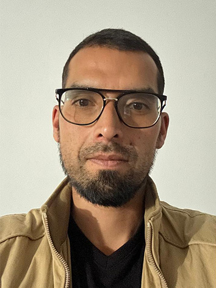

Welcome to My Porfolio
Erik Rincón Gutiérrez
Home
Hello and welcome!
I’m excited to share my portfolio with you. Here, you’ll discover my work, my skills, and projects that showcase my passion for creating modern, responsive, and user-friendly web experiences.
I bring a strong sense of creativity and visual detail into every project I build. My experience in customer service has also shaped the way I approach development—always focused on solving problems and creating seamless experiences for people.
As I continue growing as a front-end developer, my goal is to combine design, functionality, and performance to deliver meaningful digital solutions. Feel free to explore my portfolio, and get to know the work I enjoy creating.